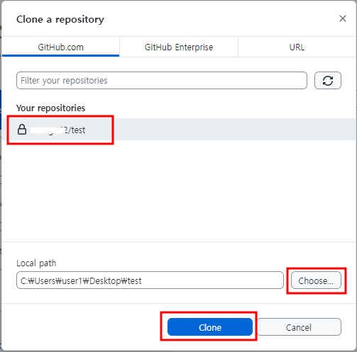

- 우선 회원가입부터 하고, 로그인 하기
- Create repository 버튼 클릭
- Repository 생성.
저장소의 이름과, 저장소 설명, 공개 여부를 체크한 후 Repository를 생성.
- Repository 생성 완료
- 모두 기본으로 놓고 설치한다.
- Code 버튼 클릭하여 화면에서 Open with GitHub Desktop 클릭.
Desktop이 설치가 안되어 있는 경우 다운받아 설치한다.
- 아래와 같이 팝업창이 뜨면 항상 열기를 선택.
- Clone a repository from the Internet... 선택.
- Sign in 버튼 => Continue with browser 선택.
- 기존에 만든 Repository 선택한 후 Local Path에서 본인 컴퓨터의 어느 위치에 복제할 것인지 선택 후 Clone버튼 클릭.
- Repository => Pull을 선택하면 바로 저장위치로 받아진다.
- 본인 컴퓨터의 복제한 위치에서 파일을 하나 만들어 아래 그림과 같은 순서대로 올린다.
- 아래 그림처럼 Push origin을 선택하면 GitHub에 올라감.
- 예를 들어 java 프로그램을 하면 검색창에 'java'를 넣고 eclipse에서 사용하면 검색창에 'eclipse'라고 쓰고 생성버튼 클릭하여 복사하기
- Desktop에서 ignore 설정하기
Repository => Repository settings... 선택
Ignored files 선택 후 오른쪽 창에 제외할 것들을 넣고 Save버튼 클릭